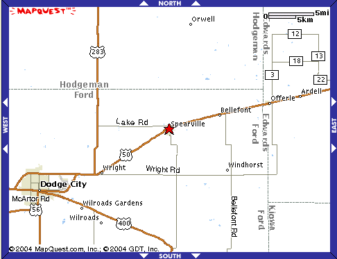
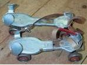
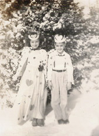
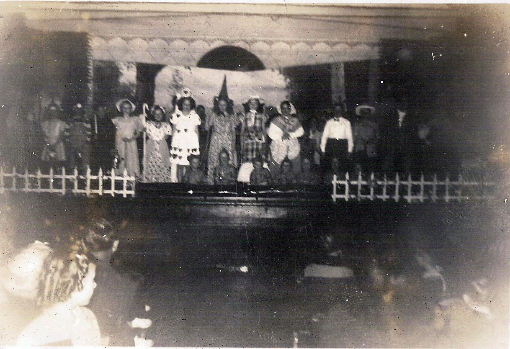
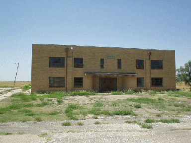
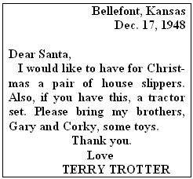
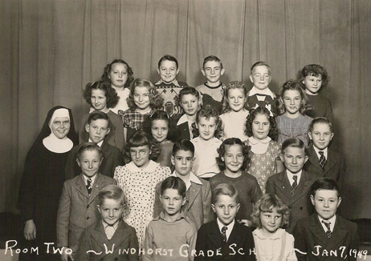

Second and third grade (1947-49)
Our next place of residence was a most unusual locale. Its name is Windhorst. But it was not a town, so it is rather hard to find it on a map. By way of helping you, I can say it's about 15 miles straight east of Dodge City. You've surely heard of the phrase "just a stop in the road". This place must be the origin of that phrase, as I can think of nothing better to describe it. In 1947 when we arrived, it consisted of the following structures: a Catholic church, a house for the priest, a school building, a house for the nuns who were the teachers, and a small house behind the school. That house was for the teacher who was hired to teach manual training (wood shop) and be the athletics coach. Since that was what my dad did, that was our home. There were, in fact, two other buildings on the other side of the road: a small shop for the woodworking classes and a private farm house some 50 yards down the road. Except for some chicken coops behind our house, that was about the extent of Windhorst.
 Don't misunderstand me, we weren't far from civilization. Why, just up the road was another "stop in the road", called Bellefont. It consisted of a gasoline station, grocery store, and post office, all in one building. A multi-use facility, as such services are called today. We could fill up our car and our grocery bags. And that's where I mailed my letters to Santa Claus at Christmas time. There was a house or two nearby, perhaps where the owner of the store lived. (See map at right.)
My father took care of his banking matters in yet another small town further away from Bellefont, called Spearville. My little brother Gary always had trouble pronouncing that name, saying instead "Spearbill". He also didn't understand money matters very well either. Once he asked Dad to buy him something and was told there was no money. Having observed Dad cash a check in the bank, he quickly piped up, "Well, just go to the bank and buy some!"
After we got setted in to our new home, our parents gave my brother and me each a special treat. For Gary, they bought him a nice pair of roller skates, the kind that fastens to the soles of one's shoes with a clamp at the toes and a strap around the ankle. (See illustration.) On the other hand, I got a big-wheeled bicycle! Not the biggest of wheels, mind you, but definitely not the miniature kind that often come with training wheels. We two spent hours and hours skating and riding on the concrete tennis court that was in front of our house and behind the school. (See photo HERE.)
My second grade year was one of my fondest of my whole education. Sister Mary Constance was my teacher. I adored her as did all of her students. She taught grades 1 and 2 in the same room. Classes were not large in this school. Grade 3, 4, and 5 were combined, as were grades 6, 7, and 8. This was a not uncommon pattern in western Kansas in those days or even much later. Since our family was not Catholic, I was permitted to come "late" to classes. This way I didn't have to participate or observe the lessons in catechism that began each school day. However, from time to time, I did enter a few moments before it was finished, so I was "exposed" to that material a little. But no harm was done.
Spelling was my favorite class this year. Each week we were given a new list of 20 words to learn. On Fridays we were tested on these words. I took pride in always getting a perfect score, 100%. Well, I should say, I almost always got a 100. One time near the end of the year, I did not make my standard norm. I had finally missed a word. And it almost broke my heart. My mother later told me that she saw me entering our house, crying with big tears running my face. When she asked me what was the matter, I told her the horrible news - I put only one m in the word summer. To this day, I can't read, write or say that word without a split-second flashback occurring in my brain about that dark day in my academic life.
The earliest record that I have of any girl-friend type romance in my life comes from this period. Her name was Doris Tasset. She was cute, as can be seen by the photo here. We were elected as King and Queen of Hearts to celebrate Valentine's Day that year (1948). Ah, puppy love! How sweet it is!  Another big event that spring was the operetta that we students presented: Snow White and the Seven Dwarfs. I don't know why Sister Constance chose me to play the role of the handsome prince. Perhaps she considered me the handsomest lad in room? My real preference was to be one of the dwarfs so as not to have so much attention directed my way. Whatever the case may be, I was Prince Charming and that was that. It so happened that my mother had a talent for sewing and made many of the clothes that my brothers and I wore in those days. So for my role in this big show, she made me a white, long-sleeved shirt and bright red pants, styled like a fairy tale prince that are seen in children's story books. I had a shiny pair of cowboy boots on my feet.
I didn't have a horse to ride to make my grand entrance. I made my dismount off-stage. To simulate it, Sister Constance picked me up by my shoulders a foot or so in the air, then "dropped" me to the floor. Gently, of course, but making enough noise with the heels of my boots to produce a reasonable sound effect. As I entered the scene, my first words to Snow White (played by a first grade girl named Marilyn) were, "What have we here?" Whether I kissed her or not to awaken her I don't recall. Considering the ages of the actors, I rather doubt it. Here is a photograph taken of the cast. I am in the white shirt toward the right.

My love for sports grew ever stronger during my time at Windhorst. This was due in large measure to the fact that my father was the coach here as in previous schools. This meant that I could follow him around as he held practice sessions with his teams, basking in all the excitement and glory of the competitions. During the fall months of September through November, football was king. However, it wasn't your regular kind of football. Sure, it was like NFL football, with the oval shaped ball, set plays in a huddle and all that. It's just that there were only 6 players per side, instead of the normal 11. And the playing field was a little smaller in size. However, the intensity and emotion of the players, coaches, and the crowd was no less for that. Friday nights meant football, and everybody supported the team.
What I liked best was to mingle with the athletes during the week, of course. Though they were in actuality just high school boys, ages 14 to 18, they were, in my eyes, men. The stars of the team were like Greek gods to me, a mere 6-year-old kid. Strange though as it may sound, I really enjoyed being in the dressing rooms with or even without them, smelling the sweaty odors, rubbing my hands over the old used footballs, caressing the shoulder pads and other protective gear worn by them. My brother and I had our own helmets and sets of shoulder pads (see photo) to dream that someday we'd be playing football just like our idols.
Basketball presented a unique challenge. There was no gymnasium in which to play the "home" games! So all games on the schedule had to be played on the opponents' home courts. For practice sessions, my father had two options. One was to use the tennis court behind the school building. This, however, was often not possible, as basketball is a winter-time activity. Training sessions could often not be held because of the snow and ice on the court, or merely the cold weather in general. The second option was to use the auditorium in the semi-basement of the building. Removing all the chairs left a space that approximated a basketball court. The trouble now was the low ceiling. Even after placing a goal as high as possible on the wall, it still wasn't a proper situation for good shooting.
 In spite of these severe drawbacks, I'm proud to say that my dad's teams were always competitive, fighting to the very end regardless of losing all, or most all, of their games. The number of points that they lost by were usually less than 5. This, for me, is a tribute to the great skill my father had for instilling the basics of the sport into his players. A player once asked him, "But, coach, when are we ever gonna win a game?" Ironically, the answer came after we left Windhorst. Late in the spring of our second and last year, a large, beautiful gymnasium was built. (Photo shows the current condition of that gym.) From that time onward, Windhorst became a powerhouse school in their division category (BB in those days, 1A later), its teams often making it to the championship tournament at "state" level. I often think those were the results of the seeds planted by my father in the years 1947-49.
Christmas was always a time of great excitement and wonder for me and my brothers. We decorated a tree in the living room, placed wrapped gifts all around it, and of course wrote letters to Santa Claus. One of my letters to the Jolly Old Elf was even published in the Spearville newspaper. It said:
 One December evening of either '47 or '48, my dad pulled a really slick trick on Gary and me. We were sitting at the dining table eating supper. From his chair, Dad had a straight line of sight to one of the windows of the bedroom that we three boys shared. For about half a minute, he just sat there, intently staring at the window. I looked at him and in the direction of my room, but could see nothing there. All of a sudden, Dad leaped to his feet, dashed to the bedroom, saying, "There he goes! There goes Santa!" We both ran like rabbits behind him, shouting, "Where? Where? We can't see him." "There he goes, over the shelter belt. I'm sorry that you missed him." We pressed our noses to the cold window pane, but to no avail. I can assure you, dear reader, that we were two very sad little boys, having just missed a once-in-a-lifetime chance to see ol' Santa up close and personal. After this instant, I'm sure we were two very well-behaved little boys, knowing that S.C. was checking up on us so directly.
In Kansas, Christmas time often means snow, and snow often means blizzard storms, and blizzards often mean "no school!" The months following that visit of Santa proved to be no exception. During one of the school days of that semester, a big storm arose and caught everyone off guard. The people living in this area were and are no strangers to such an environmental event. Most of the families were able to get in to the school to pick up their children, but the parents of two of my classmates - Lester and Esther Tieben, a boy-girl set of twins - were stuck in Dodge City while shopping. Somehow word got passed to them not to worry; the Trotters would be glad to take care of them in their house. Ah, what adventure! No school and one's best friend staying in one's house. How we enjoyed the 2 or 3 days that Lester was "stranded" in my home. We certainly took advantage of the situation and put in many delightful hours playing our favorite games inside or outside in the snow drifts. Sadly though, eventually the Tieben's were eventually able to come by and gather up the twins. Good times can't last forever, right?
The summer of '48 was very special for me. By now my second brother was born - Roger Courtney, on October 7, 1947. For our summer vacation in August, we took a major trip, up through Nebraska to the Black Hills region of South Dakota, then returning through the corner of Wyoming and passing through Colorado. We saw Mount Rushmore and the Black Hills in South Dakota. But I was probably more excited by the life-sized concrete dinosaurs that are just outside of Rapid City, S. D. (see photo) The final tourist spot that has stayed in my memory was the Seven Falls in Colorado. It was, indeed, a great trip, one that I've never forgotten.
My father took on some extra duties this summer, quite apart from his teaching and coaching. He agreed to help with the upkeep of the little cemetery just north of the school, by mowing the tall grass that had sprung up. One hot, sweltry afternoon, while he was working, my mother asked me to take a bottle of water to him. After he drank most of the water, he told me to put the jar over on a pathway away from the area he was mowing. Eager to do his bidding, I took the jar and began running to that spot. I didn't watch carefully where I was running and stepped into a small gutter beside the path. The jar hit the ground before I did and broke into several pieces. One piece made a severe gash on my forearm and a lot of blood began streaming out. Gary, who had gone with me, ran to Dad, because the noise of the mower made it impossible for him to hear our screams for help. Later, after we got the situation under control and were back at the house, my mother suggested that we go to a doctor and have some stitches put in to close the wound. But the mere thought of a needle and thread being stuck into my arm scared me even more than the pain I'd already experienced. So I pleaded and begged them not to take me and do that. Much to my relief, they relented. For all these years afterward I have proudly shown off the big V-shaped scar on my arm as I tell my listeners about this hot, summer day.
For my third grade year, I moved up to "Room Two", with Sister Mary Stephen in charge. As referred to above, three grade levels were together now - 3rd, 4th, and 5th. This sister wasn't quite as "cool" as Sister Constance was, or so says my memory of that year. We all took delight in calling her Sister "Step-hen", in secret of course.

* *** * Upon completing this school year, the Trotter family spent the summer in Pittsburg, where my father continued his post-graduate studies toward his master's degree at K.S.T.C. I too attended classes that summer, as well as the following one. Just across the street from the college, Horace Mann Laboratory School operated an enrichment and remedial session for elementary grade children. The mornings consisted of standard classes of arithmetic, language arts, and the sort. Click here to see a copy of the evaluation letter that I received at summer's end.
The afternoons were devoted to music, sports, and handicrafts like pottery or making jewelry out of metal. For the summer of '49, I chose swimming and the handicrafts class. My pride and joy in the latter activity was my ceramic statue of a running horse. I made it from clay and fired it in a kiln. I even gave it a name: Bee-bite. Why? Well, I reasoned that it was running because it had just suffered a severe sting from a nasty ol' bumble-bee. Not terribly imaginative perhaps, but it satisfied me at the time.
Our housing for this summertime was rather unique. My parents had either bought or rented a small, but adequate, mobile home. We called them trailer houses, in those days. The college authorities allowed us and other families to park them under the grandstands behind the football stadium. There was a small lake about 50 yards away from us, which made my brother and me happy. Though it was not appropriate for swimming, one could do a little fishing. Of the two of us, Gary was the fisherman. He caught two or three perhaps, whereas I never caught any. That summer, or at any time in my life. The fish of the world have nothing to fear when I take a fishing pole in hand. Still it was pleasant to live awhile by the water.
| Comments? Send e-mail. |
Back to top |
Go back to Contents |
order viagra usa viagra non prescription generic viagra online generic viagra order viagra usa order generic viagra online non prescription viagra usa non prescription viagra canada cheap generic viagra order generic viagra canada online generic viagra non prescription viagra usa canada online viagra without perscription viagra online non prescription viagra online non prescription order viagra canada order generic viagra canada viagra online non prescription order generic viagra online viagra online non prescription viagra non prescription viagra online non prescription non prescription viagra online order generic viagra online
{kind=link}